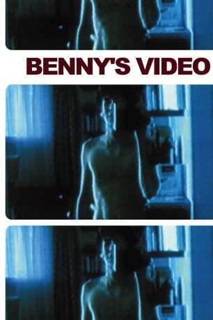

#6438 Benny's Video
 
 IMDB-Wertung: 7.2 / 10
IMDB-Wertung: 7.2 / 10  Tomatometer: 64
Tomatometer: 64  Metascore: 0
Metascore: 0 
Die Geschichte des Jungen Benny, der ein Mädchen vor laufender Videokamera tötet, ist ein eindringlicher Beitrag zur "Gewalt-in-den-Medien"-Debatte. Eine beklemmende, komplexe moralische Fabel über die Entfremdung von Menschen zu Wesen mit erschreckender emotionaler Teilnahmslosigkeit. Dicht inszeniert, hervorragend gespielt und fotografiert, verankert "Benn's Video" den Namen Michael Haneke endgültig auf der Karte der Filmkunst.
Jahr: 1992
Dauer: 109 Minuten
FSK: 16
Land: Österreich Studio: Pandora FilmproduktionTonspuren:
Untertitel:
Auflösung: 1080p (1808x1080) Größe: 7833 MB
Genre: Drama, Krimi
Regisseur: Michael Haneke
Drehbuch: Michael Haneke
Soundtrack:
Darsteller:
- Arno Frisch als Benny
 Angela Winkler als Mutter
Angela Winkler als Mutter Ulrich Mühe als Vater
Ulrich Mühe als Vater- Wolfgang Böck als (uncredited
 Paulus Manker als (uncredited
Paulus Manker als (uncredited- Dietrich Siegl als , uncredited
- Ingrid Stassner als Mädchen
- Stephanie Brehme als Evi
- Stefan Polasek als Ricci
- Christian Pundy als
- Max Berner als
- Hanspeter Müller als
- Shelley Kästner als
- Cecile Gordon als (uncredited
- Imelda Marcos als Herself , archive footage, uncredited
- Hans Meiser als Himself , archive footage, uncredited
- Brigitte Reimann als Herself , archive footage, uncredited
- Susanne Schneider als (uncredited
- Martin Schoendeling als Sales manager in videostore , uncredited
- Ulrike von der Groeben als Herself , archive footage, uncredited
Datei: X:\1992\Benny's Video (1992, FSK16, 1808x1080).mkv seit 21.06.2017
Festplatte: HD 1992-1995
 Es gibt insgesamt 57 Filme in der Gruppe '1992'
Es gibt insgesamt 57 Filme in der Gruppe '1992'